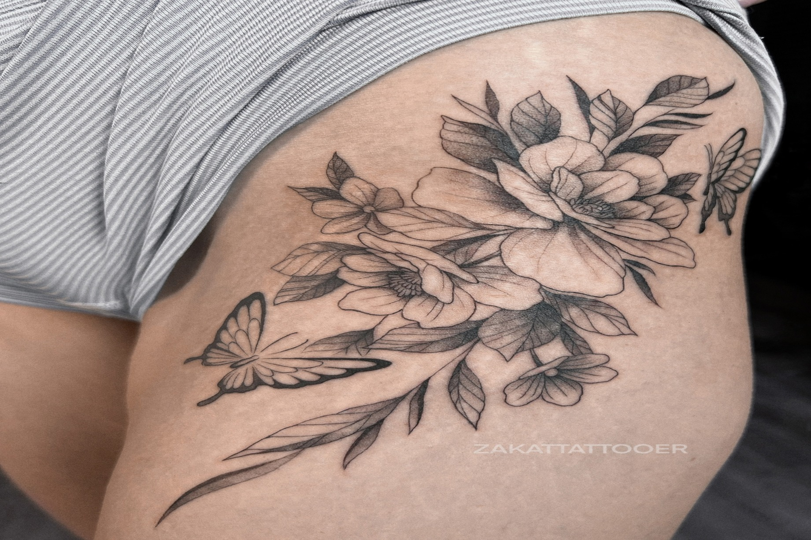
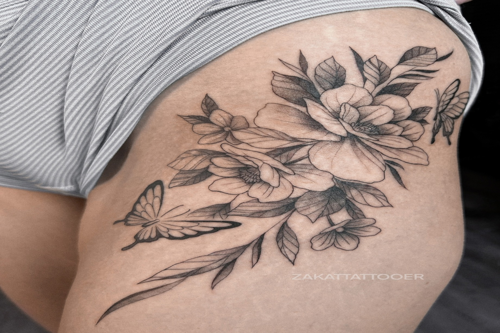
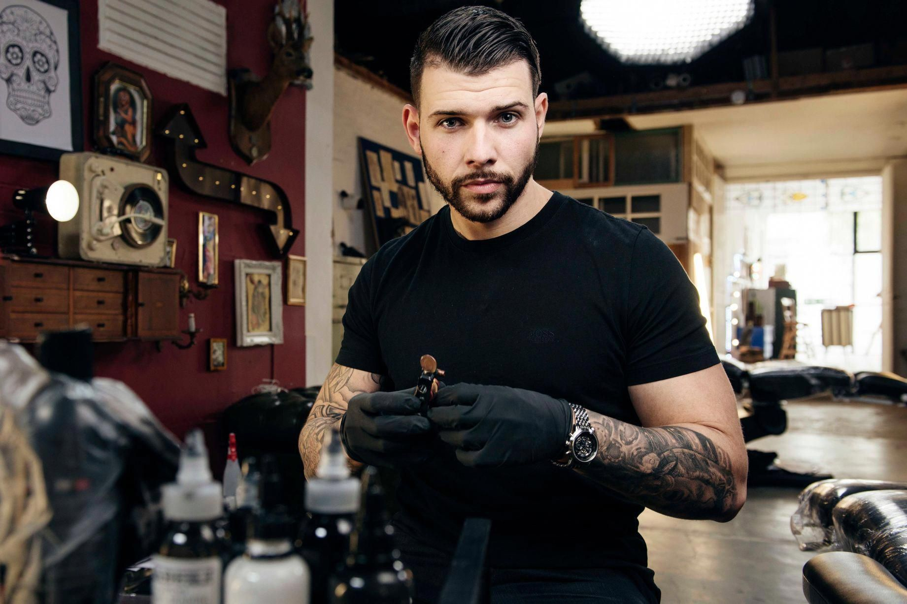
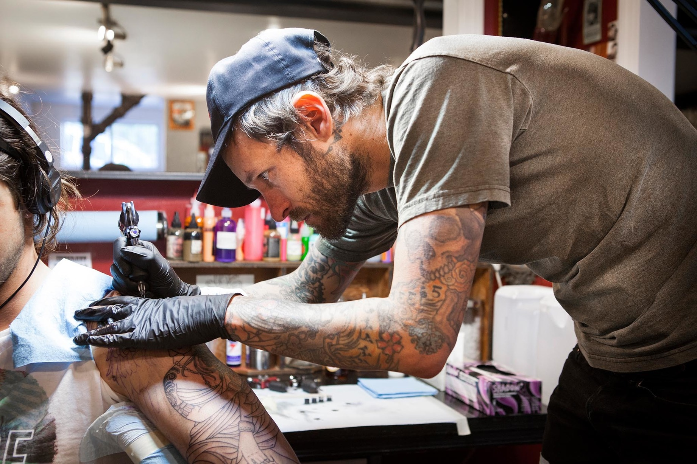

Работы наших мастеров
 


Артем
Меня зовут Артем, мне 24. Татуировкой занимаюсь 4 года, и всю жизнь рисую. Собственно любовь к рисованию и привела меня в эту профессию. Я стараюсь не ставить себе стилевых рамок, и работаю со всем, что могу хорошо нарисовать и исполнить на коже. Но если конкретно: графика, ч/б реализм, нео-трад, нью скул, орнаменты, японская татуировка. Я выделил для себя два основных критерия хорошей татуировки, которым я следую. Во-первых это качество нанесения, во-вторых творческий замысел (оригинальность)
Сергей
Привет, с вами я, Сергей. За время работы так и не появилась любовь и тяга к какому-то одному стилю. Нравиться практически всё и всё хочется периодически попробовать, на практике же наиболее часто приходится делать ориентал, чб реализм...ну и кучу разных работ, которым и определения не могу дать (слишком сильно переплелись стили в современной татуировке)… Особенно же часто делаю перекрытия. Главным в работе считаю- профессионализм, порядочность, ответственность за свои действия, умение находить общий язык с клиентом. Главное, чтобы люди ушли счастливыми
Мария

Мария – профессиональный пирсинг-мастер, который уже 2 года работает в тату-салоне poVene. Она обладает богатым опытом и знаниями. Мария в точности следует всем санитарным стандартам, держит все инструменты в чистоте и использует только качественные материалы, чтобы обеспечить безопасность своих клиентов.